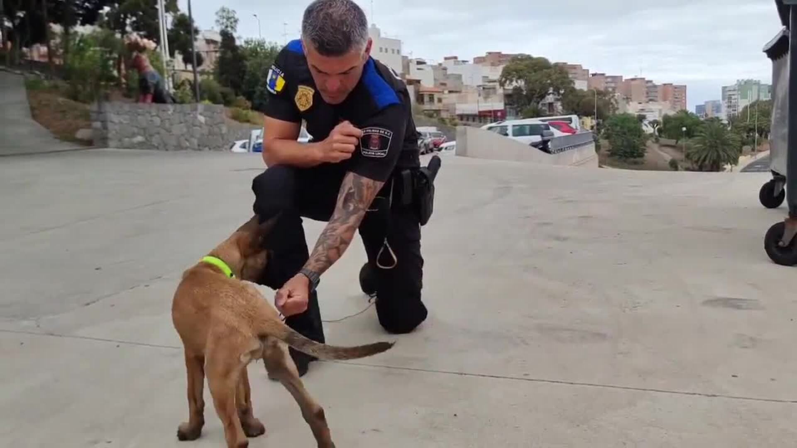

El incidente de San Telmo trae al recuerdo el atropello mortal de la estación de Puerto del Rosario
El incidente de este miércoles en la estación de guaguas de San Telmo en Las Palmas de Gran Canaria, donde dos
personas resultaron heridas -un hombre en estado grave y una mujer en estado crítico-, al estrellarse una
guagua contra un muro cuando recogía pasaje, trae al recuerdo el atropello mortal de 2023 en la estación de
guaguas de Puerto del Rosario, en Fuerteventura, cuando un accidente similar se saldó con la muerte de una
mujer de 70 años. En aquella ocasión, la guagua se precipitó hacia adelante en vez de salir marcha atrás.
Un pescador desaparecido y otro herido tras sufrir un golpe de mar en La Aldea de San Nicolás
Un hombre se encuentra desaparecido al sufrir un golpe de mar mientras pescaba en el muelle de La Aldea de
San Nicolás, Gran Canaria. Según fuentes del Centro Coordinador de Emergencias del 112 del Gobierno de Canarias,
el pescador desaparecido está siendo buscado por mar por los buzos de la Guardia Civil y por aire con un helicóptero
Helimer 202.Un hombre se encuentra desaparecido al sufrir un golpe de mar mientras pescaba en el muelle de La Aldea
de San Nicolás, Gran Canaria. Según fuentes del Centro Coordinador de Emergencias del 112 del Gobierno de Canarias,
el pescador desaparecido está siendo buscado por mar por los buzos de la Guardia Civil y por aire con un helicóptero
Helimer 202.
La pequeña Nax comienza la escuela

Nax ha recibido en la mañana de este jueves una animada clase con la Policía Local de Las Palmas de Gran Canaria.
Esta unidad policial ha publicado en su cuenta X un video de «las primeras clases» de la perra, que con tan solo
dos meses y medio inicia su proceso de adiestramiento.